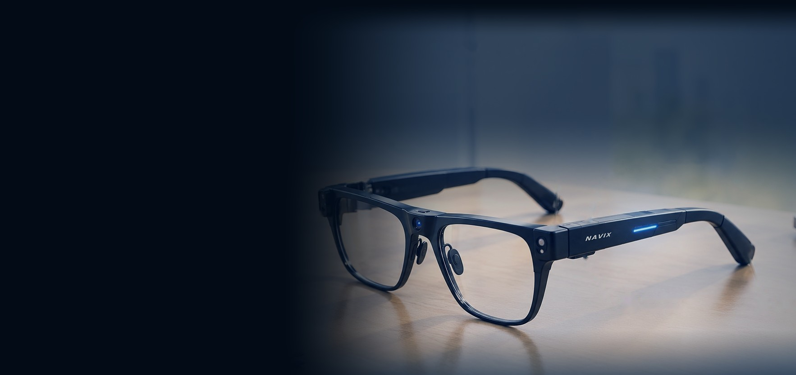

CURRENCY RECOGNITION
CURRENCY RECOGNITION
₹500 example recognition
01
Money Detection
Identifies currency notes and speaks the recognized denomination aloud.
This appears to be a ₹500 note.

𝑵𝑨𝑽𝑰𝑿 is an AI-powered assistive navigation system designed to help visually impaired people understand their surroundings through intelligent visual perception and spoken guidance.
We’re exploring how responsible AI and accessible design can make environmental information easier to understand — one useful cue at a time.
Discover the visionSupport people in perceiving relevant details around them.
Designed around uncertainty, caution, and user control.
Human-centred ideas for more inclusive everyday experiences.
Explore illustrative scenarios for environmental awareness and audio guidance.
CURRENCY RECOGNITION
Identifies currency notes and speaks the recognized denomination aloud.
 TEXT & LABEL READING
TEXT & LABEL READING
 ENVIRONMENT AWARENESS
ENVIRONMENT AWARENESS
Illustrates how supported depth sensing may communicate distance to nearby objects.
 PEDESTRIAN AWARENESS
PEDESTRIAN AWARENESS
Highlights relevant obstacles and nearby movement to support environmental awareness.
Demonstration concepts only. Sample detections, distances, and spoken messages are not connected to live sensors or an operational AI system.
A wearable concept exploring how cameras, processing, and audio guidance could work together in a comfortable assistive device.
Discuss the Concept𝑵𝑨𝑽𝑰𝑿 concept · full frame
Five areas of exploration for a more accessible everyday experience.

Explore how relevant people, vehicles, signs, and everyday objects may be identified.

OCR can help turn visible text on signs and product labels into accessible information.

Validated sensors or depth estimation could provide context about nearby objects.

Concise audio messages can help communicate selected information to the user.

Ergonomics, comfort, and discreet component placement are important design goals.
Assistive technology must be transparent about what it can do, what it cannot do, and when a user should not rely on it.
Minimize collection and protect sensitive information.
Communicate limitations instead of presenting guesses as facts.
Prioritize accessibility, dignity, and user control.
Validate hardware, models, and real-world performance before relying on them.
𝑵𝑨𝑽𝑰𝑿 is an assistive technology concept under development. It is not a replacement for a white cane, guide dog, mobility training, or independent safety judgment. Not a medical device.
We welcome conversations with developers, accessibility researchers, testers, and organizations interested in responsible assistive technology.
This demo form does not send messages yet. Connect a backend or email service to enable delivery.